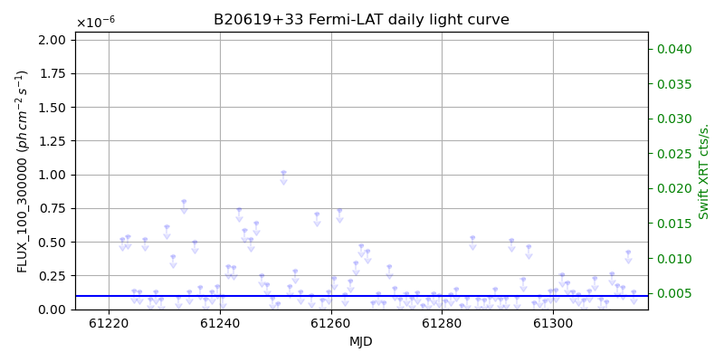
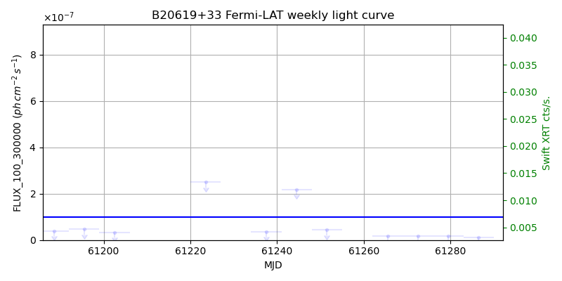
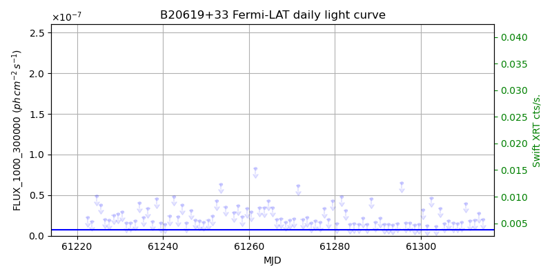
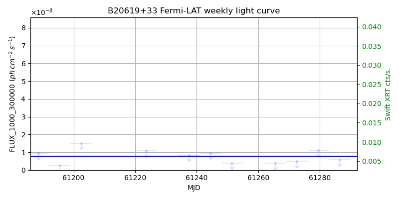

LAT Lightcurve site: https://fermi.gsfc.nasa.gov/ssc/data/access/lat/msl_lc/source/B2_0619p33
Swift site: https://www.swift.psu.edu/monitoring/source.php?source=B20619+33
NED: Query
Time of last update of this page: UT: 2026-10-02 15:17 (MJD: 61315.637)
| Property | Value |
|---|---|
| R.A. | 6:22:52.32 |
| Dec. | 33:26:09.6 |
| z | 1.062 |
| 3FGL SpectrumType | LogParabola |
| 3FGL PL Index | |
| 3FGL Flux_100_300000 | 9.92e-08 1 / (s cm2) |
| 3FGL Flux_1000_300000 | 7.63e-09 1 / (s cm2) |
| 3FGL Flux >200 GeV | 8.46e-12 1 / (s cm2) |
| 3FGL Extrap. Crab >200 GeV | 0.04 |
| 3FGL Flux After EBL Absorption >200GeV | 9.86e-14 1 / (s cm2) |
| 3FGL EBL Crab Fraction >200GeV | 0.00 |

| MJD | dMJD | Flux | dFlux | Frac3FGL | FracCrab>200GeV | EBLFracCrab>200GeV |
|---|---|---|---|---|---|---|
| 61310.50 | 0.50 | 2.69e-07 | 0.00e+00 | 0.00 | 0.00 | 0.00 |
| 61311.50 | 0.50 | 1.76e-07 | 0.00e+00 | 0.00 | 0.00 | 0.00 |
| 61312.50 | 0.50 | 1.64e-07 | 0.00e+00 | 0.00 | 0.00 | 0.00 |
| 61313.50 | 0.50 | 4.29e-07 | 0.00e+00 | 0.00 | 0.00 | 0.00 |
| 61314.50 | 0.50 | 1.31e-07 | 0.00e+00 | 0.00 | 0.00 | 0.00 |

| MJD | dMJD | Flux | dFlux | Frac3FGL | FracCrab>200GeV | EBLFracCrab>200GeV |
|---|---|---|---|---|---|---|
| 61251.50 | 3.50 | 4.51e-08 | 0.00e+00 | 0.00 | 0.00 | 0.00 |
| 61265.50 | 3.50 | 1.60e-08 | 0.00e+00 | 0.00 | 0.00 | 0.00 |
| 61272.50 | 3.50 | 1.84e-08 | 0.00e+00 | 0.00 | 0.00 | 0.00 |
| 61279.50 | 3.50 | 1.85e-08 | 0.00e+00 | 0.00 | 0.00 | 0.00 |
| 61286.50 | 3.50 | 1.26e-08 | 0.00e+00 | 0.00 | 0.00 | 0.00 |

| MJD | dMJD | Flux | dFlux | Frac3FGL | FracCrab>200GeV | EBLFracCrab>200GeV |
|---|---|---|---|---|---|---|
| 61310.50 | 0.50 | 4.00e-08 | 0.00e+00 | 0.00 | 0.00 | 0.00 |
| 61311.50 | 0.50 | 1.84e-08 | 0.00e+00 | 0.00 | 0.00 | 0.00 |
| 61312.50 | 0.50 | 1.90e-08 | 0.00e+00 | 0.00 | 0.00 | 0.00 |
| 61313.50 | 0.50 | 2.76e-08 | 0.00e+00 | 0.00 | 0.00 | 0.00 |
| 61314.50 | 0.50 | 2.01e-08 | 0.00e+00 | 0.00 | 0.00 | 0.00 |

| MJD | dMJD | Flux | dFlux | Frac3FGL | FracCrab>200GeV | EBLFracCrab>200GeV |
|---|---|---|---|---|---|---|
| 61251.50 | 3.50 | 3.97e-09 | 0.00e+00 | 0.00 | 0.00 | 0.00 |
| 61265.50 | 3.50 | 3.80e-09 | 0.00e+00 | 0.00 | 0.00 | 0.00 |
| 61272.50 | 3.50 | 4.91e-09 | 0.00e+00 | 0.00 | 0.00 | 0.00 |
| 61279.50 | 3.50 | 1.11e-08 | 0.00e+00 | 0.00 | 0.00 | 0.00 |
| 61286.50 | 3.50 | 5.75e-09 | 0.00e+00 | 0.00 | 0.00 | 0.00 |
--------------------------------------------------------- Using user-supplied coords: 6:22:52.32 33:26:09.6 2000 --------------------------------------------------------- FLWO UT night of: 2026-10-03 Local Sid. @ Midnight: 00:24 Sunset (-15.0) (local, UT): 19:14 02:14 Sunrise (-15.0) (local, UT): 05:12 12:12 Moonrise (local, UT): 22:48 05:48 Moonset (local, UT): Moon phase: 0.53 --------------------------------------------------------- AzTime LSID UT Obj_el Obj_az Mn_el Mn_az Sep. --------------------------------------------------------- 19:14 19:37 02:14 -22.7 16.4 -28.5 20.1 6.7 19:44 20:07 02:44 -20.5 22.7 -26.2 26.7 6.7 20:14 20:37 03:14 -17.8 28.7 -23.2 32.8 6.6 20:44 21:07 03:44 -14.4 34.2 -19.6 38.5 6.6 21:14 21:37 04:14 -10.6 39.3 -15.7 43.6 6.6 21:44 22:07 04:44 -6.2 44.0 -11.3 48.4 6.6 22:14 22:37 05:14 -0.9 48.2 -6.5 52.7 6.6 22:44 23:07 05:44 3.4 52.1 -0.8 56.7 6.7 23:14 23:37 06:14 8.5 55.7 3.8 60.4 6.7 23:44 00:07 06:44 13.8 59.0 9.1 63.9 6.7 00:14 00:38 07:14 19.4 62.0 14.6 67.1 6.8 00:44 01:08 07:44 25.1 64.8 20.3 70.2 6.9 01:14 01:38 08:14 30.9 67.4 26.1 73.1 7.0 01:44 02:08 08:44 36.9 69.7 32.1 76.0 7.0 02:14 02:38 09:14 42.9 71.9 38.1 78.8 7.1 02:44 03:08 09:44 49.0 73.9 44.2 81.7 7.2 03:14 03:38 10:14 55.2 75.7 50.3 84.8 7.3 03:44 04:08 10:44 61.4 77.3 56.5 88.1 7.4 04:14 04:38 11:14 67.7 78.4 62.7 91.9 7.5 04:44 05:08 11:44 74.0 78.7 68.9 96.9 7.7 05:12 05:37 12:12 79.9 76.9 74.7 103.8 7.8 --------------------------------------------------------- Dark hours >55 deg.: 0.00